4. Lab7 常见问题（UDP）
重要
开始 udp_server / tcp_server 集成测试前，请先确认三件事：
Npcap 建议使用 1.31，不要升级到最新版；
Wireshark 抓的是正确的网卡，并已开启 checksum 校验；
如果无线网卡无法关闭 Checksum Offload，优先改用 纯 Linux/WSL2 环境配置（veth） 的
veth方案。
4.1. wireshark能捕获到UDP的收发包，但是UDP调试工具没有接收到？
如下图所示：
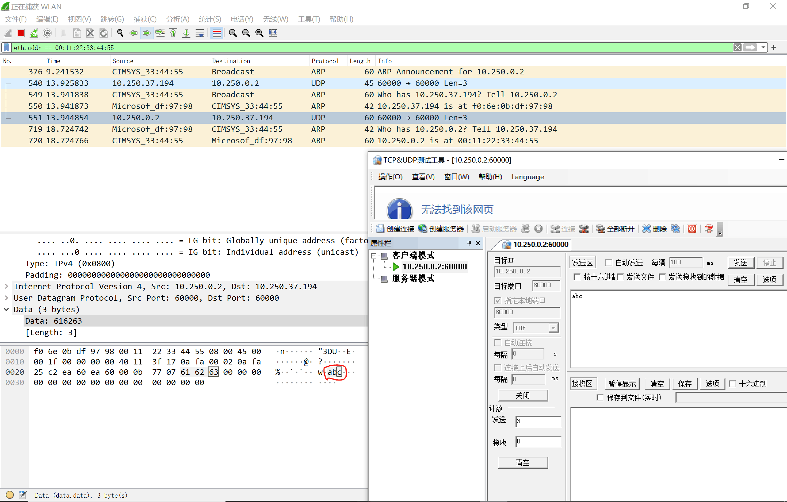
可能的解决方法：
wireshark有时候不校验IPv4首部校验和及UDP校验和，你需要在wireshark软件的菜单栏单击“编辑” —— “首选项”，在弹出的窗口中选择“Protocols”。
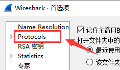
找到“IPv4”，选择“Validate the IPv4 checksum if possible”。
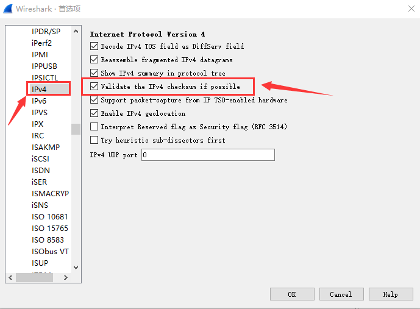
找到“UDP”，选择“Validate the UDP checksum if possible”。
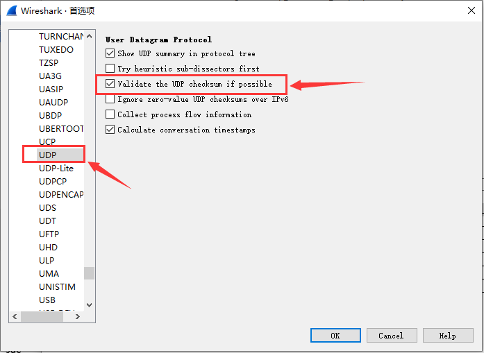
然后在wireshark的包分析窗口，分别检测IP头部和UDP头部的checksum字段是否正常。如果不正常，请自行检测IP的checksum16函数和UDP的udp_checksum函数。
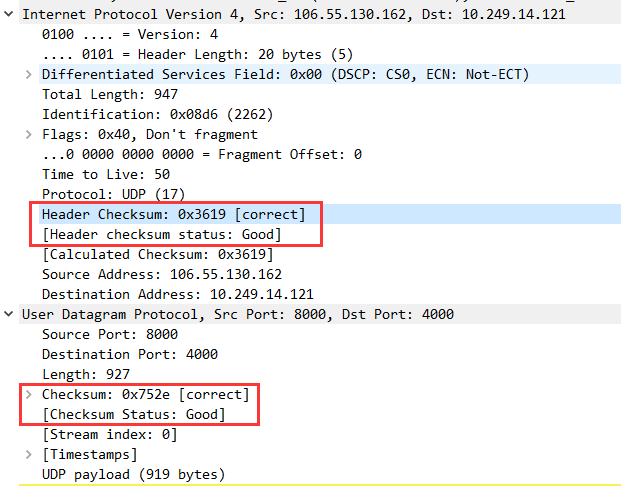
4.2. 使用wireshark捕获的IP报文的checksum为什么是0？
根本原因：硬件校验和卸载（Checksum Offload）
现代网卡支持硬件校验和卸载功能（属于TCP/IP Offload Engine, TOE技术），该功能会将IP、TCP、UDP等协议的校验和计算任务从CPU转移到网卡硬件处理，从而降低系统负载并提升网络吞吐量。
发送方向：操作系统生成数据包时，主动将校验和字段置为0，由网卡硬件在数据包离开主机前填充正确值。
接收方向：网卡硬件会在接收时直接验证校验和，若校验失败则丢弃报文（操作系统和Wireshark可能无法捕获到错误报文）。
因此，Wireshark在本地捕获的流量中，校验和字段可能显示为0x0000，但这并非协议错误，而是硬件优化导致的现象。然而，在协议分析实验中，校验和显示为0会掩盖软件层的逻辑错误（如手动构造错误校验和时无法验证）。
解决方案：关闭校验和卸载（实验环境建议）
为在Wireshark中看到真实的校验和值，需禁用网卡的硬件校验和卸载功能：
Windows系统：
打开设备管理器 → 展开网络适配器 → 右键目标网卡 → 属性。
在高级选项卡中，找到以下选项并设为关闭：
IPv4 Checksum Offload
TCP/UDP Checksum Offload (IPv4/IPv6)
重启网卡或系统使配置生效。
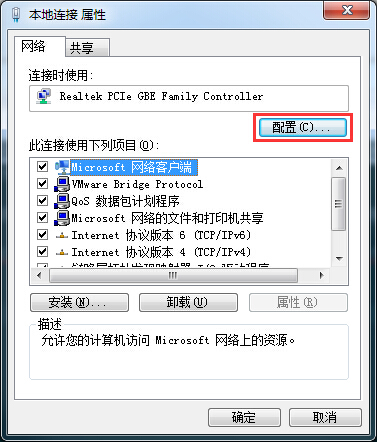

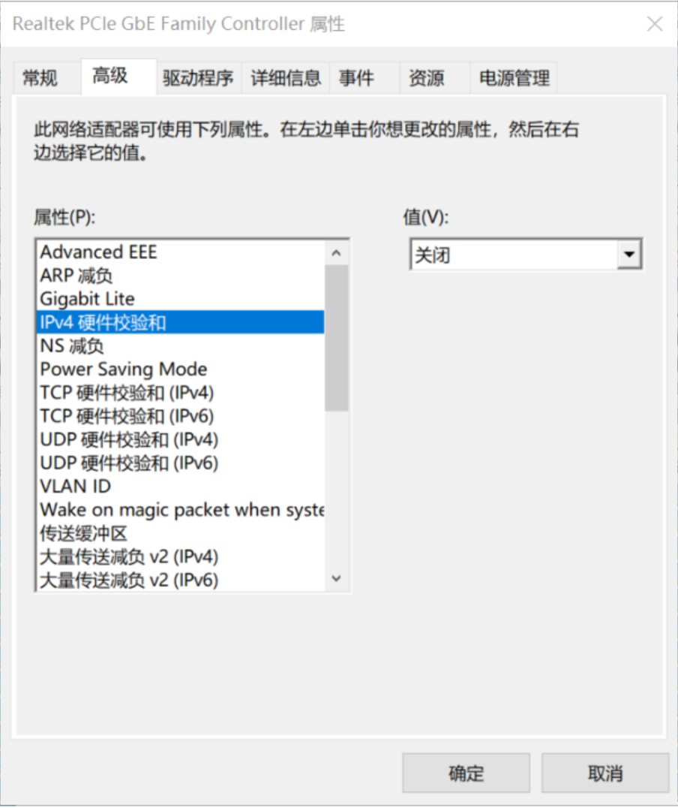

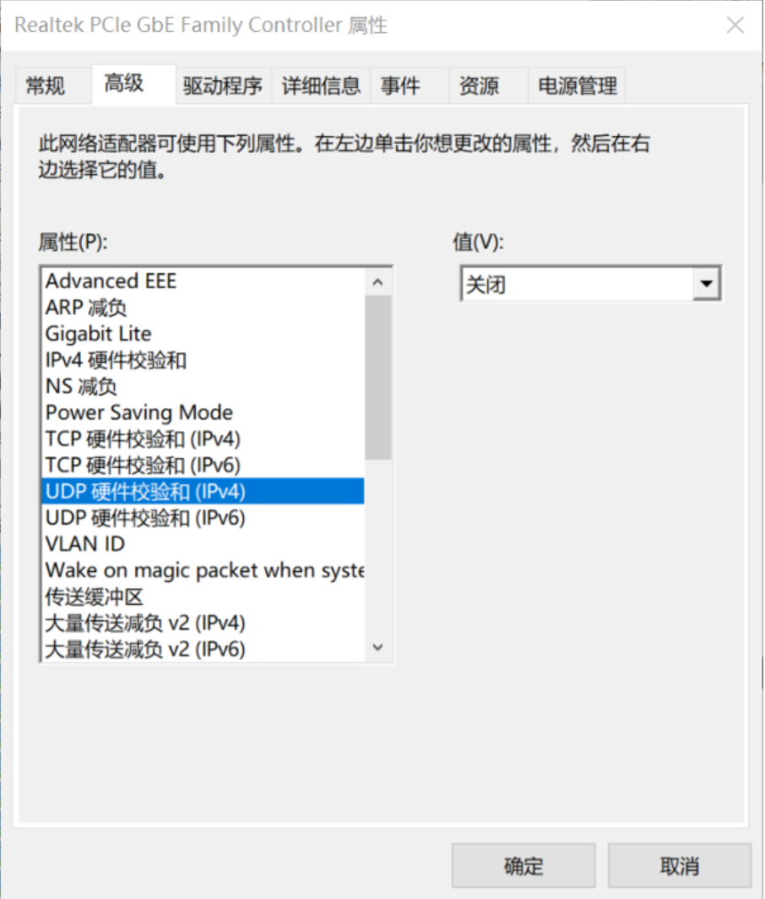
Linux系统:
使用ethtool命令关闭卸载功能（需root权限）：
1ethtool -K <网卡名> tx off rx off # 关闭发送(tx)和接收(rx)方向的校验和卸载
重要
验证与注意事项
验证方法：
关闭卸载功能后，在Wireshark中发送ICMP（Ping）报文，观察IP头部校验和字段是否变为非零值。
生产环境权衡：
实验结束后建议重新启用网卡的硬件校验和卸载功能，避免影响服务器或高性能设备的网络效率。
有些同学在使用无线网卡时，在网卡高级属性里没有上述对应的选项，那就无法使能校验和检测功能，建议最好能用有线网卡来测试实验。
详见Wireshark的官方说明：https://wiki.wireshark.org/CaptureSetup/Offloading
备注
如果你的电脑只有无线网卡，无法使用有线网卡，可以参考来自某位大佬提供的解决方案：
当在你的电脑里安装有虚拟机，假设你电脑中虚拟机生成的虚拟网卡的IP地址如下图所示：
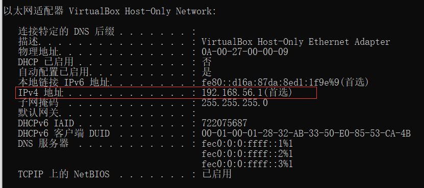
也可以从“控制面板\网络和 Internet\网络连接”查看是否有“VirtualBox Host-Only Network”网卡，如果有，双击其图标，查看“详细信息”：
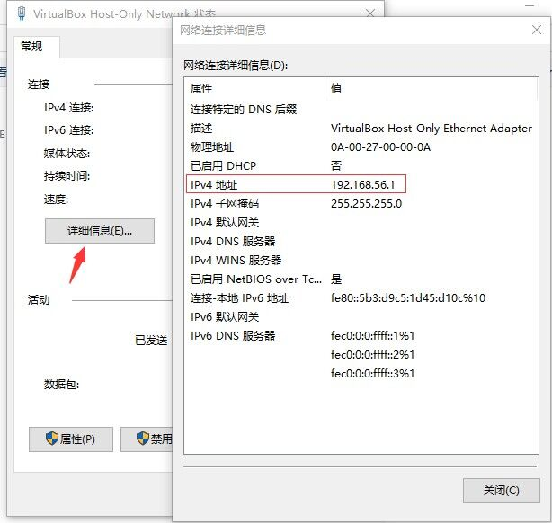
注意：此方案必须要安装有虚拟机，这样才会生成虚拟网卡。
将config.h中的IP地址改成192.168.56.XX，确保和虚拟网卡处在同一个网段内，即可用虚拟机的虚拟网卡与协议栈中的虚拟网卡进行点对点互通。
4.3. UDP实验不能GDB调试吗？
UDP实验也能用GDB调试，调试方法和Eth、ARP、IP、ICMP实验不一样，可参考 main调试 方法。
4.4. UDP调试工具每点击一次发送，Wireshark能捕获到两个包？
如下图所示：
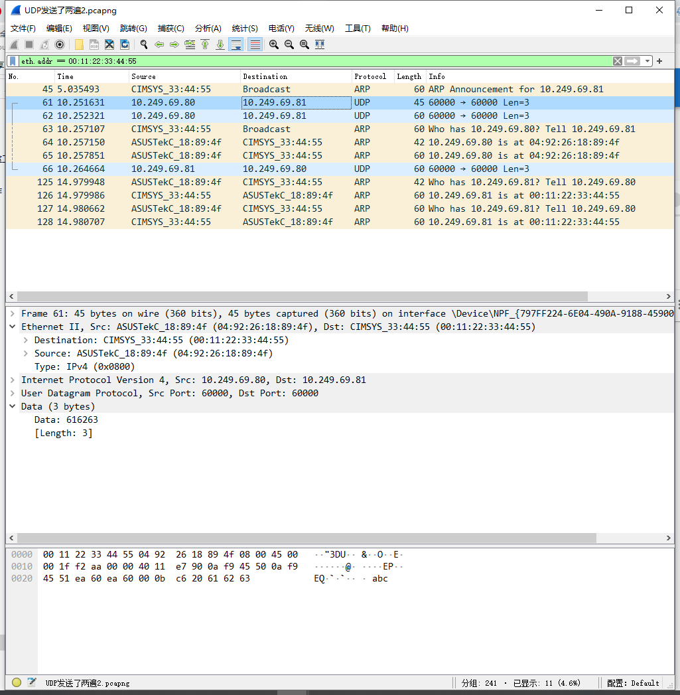
这种情况也算是对的，只要你的协议栈能回复一个包就行。UDP调试工具同时发送两个包估计是npcap的bug，详见：https://github.com/nmap/npcap/issues/58
4.5. 运行main.exe提示“Error, no interface found.”
如下图所示：
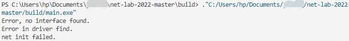
出现上述错误，原因是IP地址没写对，关于目标IP地址的定义可参考 Windows开发环境搭建 最后的提示部分。
4.6. 运行main.exe提示“have the same ip XX.XX.XX.XX with me”
如下图所示：
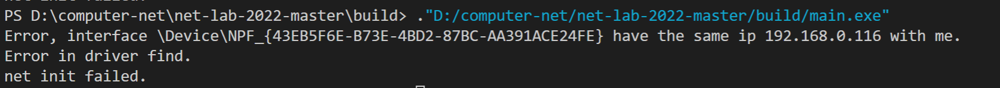
出现上述错误，原因是虚拟网卡的IP地址写成真实网卡的IP地址了，关于目标IP地址的定义可参考 Windows开发环境搭建 最后的提示部分。
4.7. 运行main.exe出现“send error: PacketSendPacket failed: 连到系统上的设备没有发挥作用。（31）”
如下图所示：
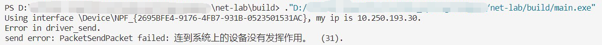
估计是高版本的 Npcap 不兼容，请卸载当前版本并安装课程已验证的 Npcap 1.31，不要升级到最新版。
Npcap 1.31 下载地址（校内网）：https://file.cs-lab.top/s/ZvX5EPOqBUx15bs
4.8. 使用 VirtualBox 实验时 pcap 发出的 inbound 包被网卡忽略
项目自测通过， 使用主程序测试 udp 通讯时出现问题： Wireshark 中能看到虚拟设备的 ARP response 和 ICMP reply， 校验显示通过， 但是应用程序无法接收到。 具体表现为 arp 表始终不更新、 手动设置 arp 映射后虚拟网卡仍无法 ping通、 udp 包能收不能发。
解决方案： 修改虚拟机网卡设置， 开启混杂模式（ 需要重启虚拟机生效）
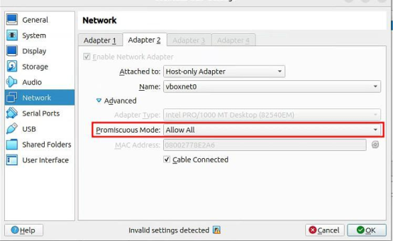